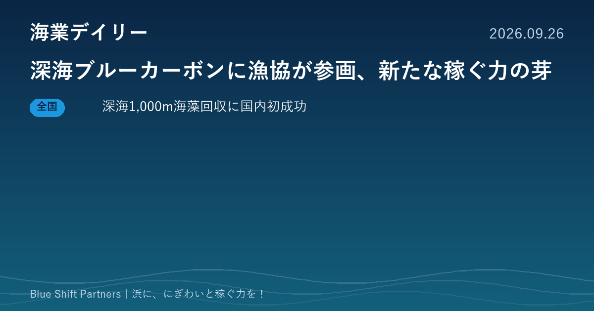
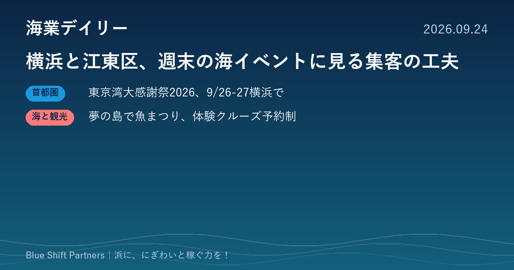
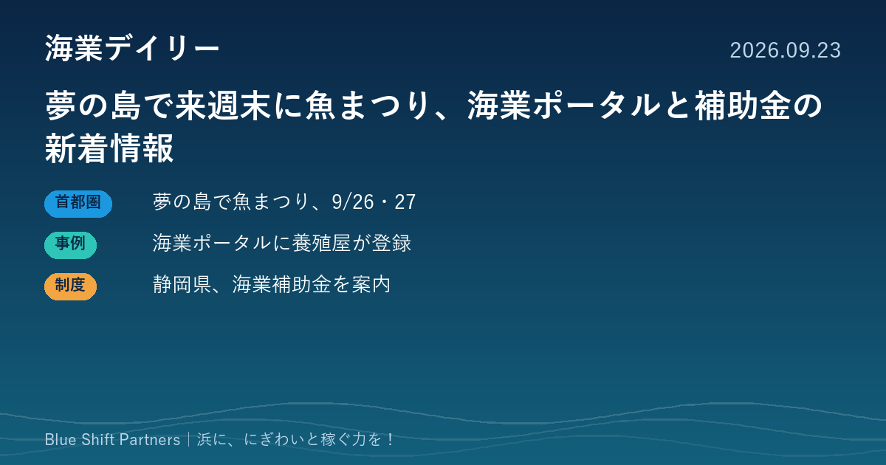

人は来るのに、地元にお金が残らない。担い手も足りない。 海辺のまちのその悩みに、集客から収益、人材、AI活用までを一本につないで応えます。 中小企業診断士が、現場と同じ目線で伴走します。
人を呼ぶ
食・体験・景観など、すでにある資源を束ねて売れる形にします。発信と予約の仕組みづくりまで。
稼ぐ力に変える
客単価・原価・季節変動・人手を数字で組み立て、補助金が終わっても続く収支にします。
続ける
担い手の確保と、AIを使った省力化。少人数でも回る仕組みを残します。
対象エリア：千葉県を中心に、茨城・東京・神奈川・静岡の漁港、漁村、離島。
ご相談先：漁業協同組合、自治体、観光協会・DMO、海業推進協議会、水産加工・飲食・宿泊・マリンスポーツの事業者のみなさま。
新着情報
- 2026.09.26海業デイリー深海ブルーカーボンに漁協が参画、新たな稼ぐ力の芽
- 2026.09.24海業デイリー横浜と江東区、週末の海イベントに見る集客の工夫
- 2026.09.23海業デイリー夢の島で来週末に魚まつり、海業ポータルと補助金の新着情報
- 2026.09.22海業デイリー令和9年度概算要求に海業振興支援事業、神奈川の海業モデルも動く
- 2026.09.20お知らせ「海業デイリー」をカテゴリー別に読めるようにしました。
- 2026.09.19お知らせホームページを公開しました。海業のご相談を受け付けています。
- 2026.09.19お知らせ海業・水産・漁村観光のニュースをまとめる「海業デイリー」を始めました。
海業デイリー
海業・水産・漁村観光のニュースをお届けしています。

2026.09.26
深海ブルーカーボンに漁協が参画、新たな稼ぐ力の芽

2026.09.24
横浜と江東区、週末の海イベントに見る集客の工夫

2026.09.23
夢の島で来週末に魚まつり、海業ポータルと補助金の新着情報
まずはご相談ください
「何から始めればよいか分からない」という段階でも構いません。初回のご相談は無料です。
お問い合わせ：info@blueshift-partners.com